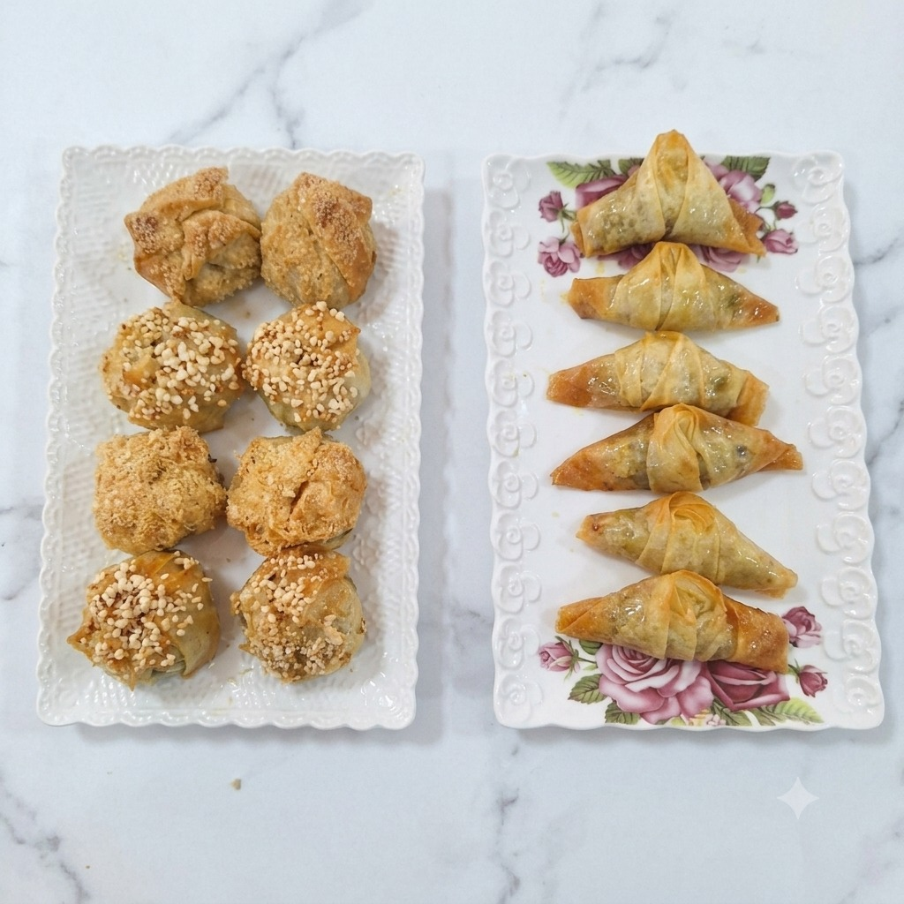

لداريالرئيسيةمنتجاتيالطلباتالإحصائياتملفي الشخصي
مساحة البائعات
مطبخ للا فاطمة
كل الأطباقأطباقحلويات
طاجين خضر الموسم55 د.منشط
طاجين كفتة بالخضر68 د.منشط

حلويات مغربية مشكلة35 د.ممسودةمن مطابخ طانطان إلى مائدتك
أطباق منزلية وحلويات مغربية تُحضّر بحبّ، وتجمع نكهات بيوت طانطان في سوق واحد.
من مطابخ طانطان
تصفّح النكهات، اختر طبقك، وخلي الباقي علينا.
لم نعثر على هذا الطبق حالياً.
أسماء المطابخ والأسعار أمثلة للتصميم، ولا تمثل عروضاً فعلية.
مساحات داري
سوق واحد يجمع أهل المطبخ وأهل التوصيل واللي كيسهروا على الجودة.

حلويات مغربية مشكلة35 د.ممسودةهذه اللوحات معاينة تصميمية ببيانات فارغة. الأسماء والأسعار المعروضة أمثلة.